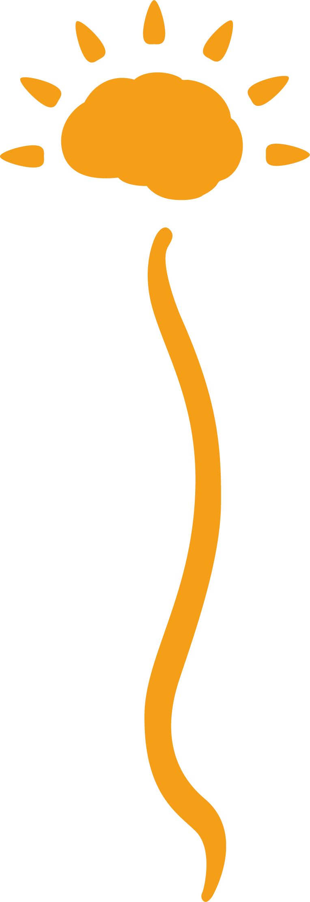

Lésions cérébrales
AVC, traumatisme crânien, paralysie cérébrale, troubles neuro-fonctionnels, …
Laetitia Cuypers · LC Physio
Améliorons, ensemble, votre qualité de vie.
Laetitia Cuypers, physiothérapeute indépendante spécialisée en neurologie. Consultations en cabinet à Puidoux ou à domicile, pour un suivi personnalisé et de longue durée.

Portrait
Physiothérapeute spécialisée en neurologie, 10 ans d'expérience.
La physiothérapie en neurologie consiste à accompagner des personnes présentant des lésions cérébrales, des lésions périphériques, des lésions médullaires ou des maladies dégénératives.
Le but est de maintenir le plus possible et le plus longtemps possible l'autonomie et l'indépendance du bénéficiaire de soin, de permettre la meilleure qualité de vie possible et de limiter les impacts physiques de l'atteinte.
Dans le cadre de ces pathologies, les patients sont le plus souvent chroniques, avec un suivi au long terme, parfois sur plusieurs années. Laetitia dispose également d'une formation complémentaire en réflexologie plantaire.
Domaines d'intervention
AVC, traumatisme crânien, paralysie cérébrale, troubles neuro-fonctionnels, …
Neuropathies, polyneuropathies, …
Paraplégie, tétraplégie, …
Sclérose en plaques, Parkinson, myopathie, sclérose latérale amyotrophique, …
Approche
J'aime partager mes expériences, mais surtout j'aime apprendre de mes patients. Pour moi, la physiothérapie est un travail d'équipe : je m'inspire des besoins et des intérêts de chaque personne pour orienter le traitement.
Après 8 ans passés à exercer la physiothérapie dans une institution spécialisée en neurologie, j’ai fait le pas d’expérimenter la vie en cabinet et à domicile durant deux ans. Deux années pleines d’expériences qui m’ont conduite à fonder LC Physio pour proposer un suivi indépendant et sur mesure, en cabinet comme à domicile.
Diplômes et formations
Localisation & accès
Le cabinet se situe à Puidoux (VD), dans un emplacement de choix : accessible depuis la gare, et proche de l'autoroute avec possibilité de parquer (accessibilité en fauteuil roulant). Des visites à domicile sont également proposées.
LC Physio — Laetitia CuypersContact
Pour toute question ou demande de rendez-vous, en cabinet ou à domicile, n'hésitez pas à me contacter.